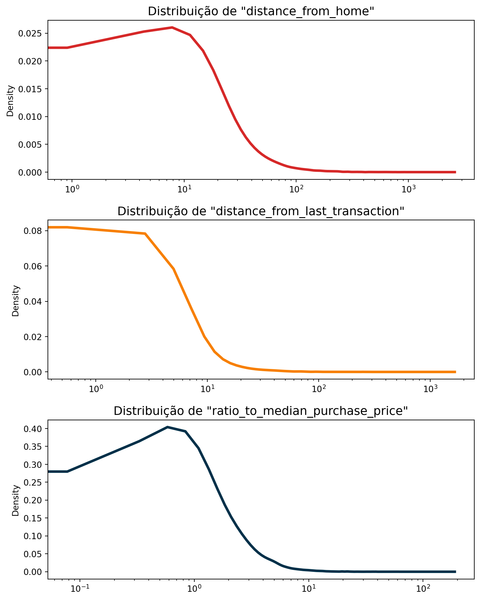
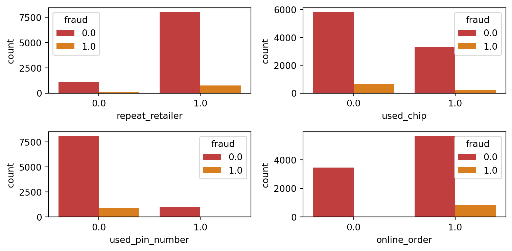
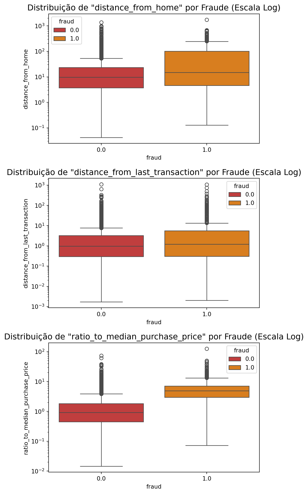
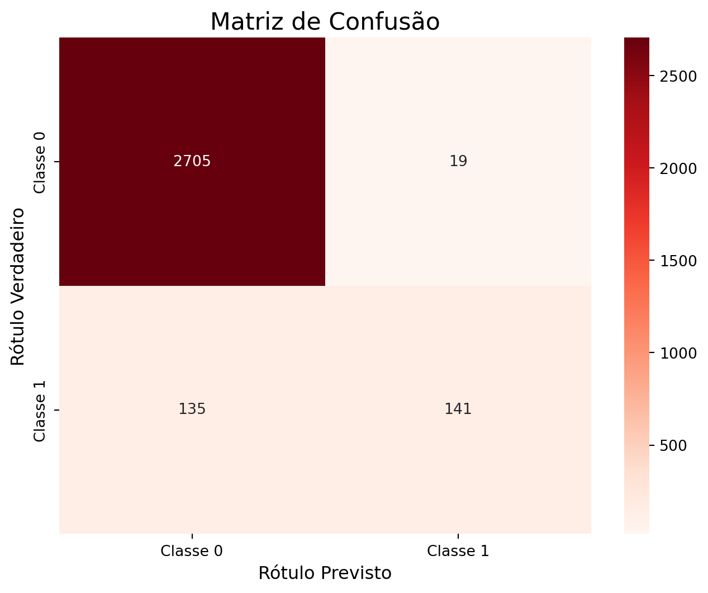
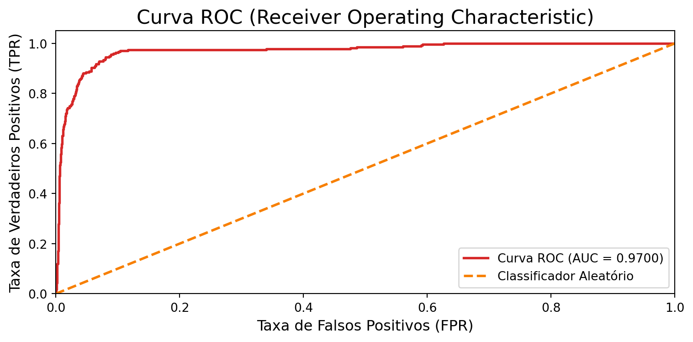
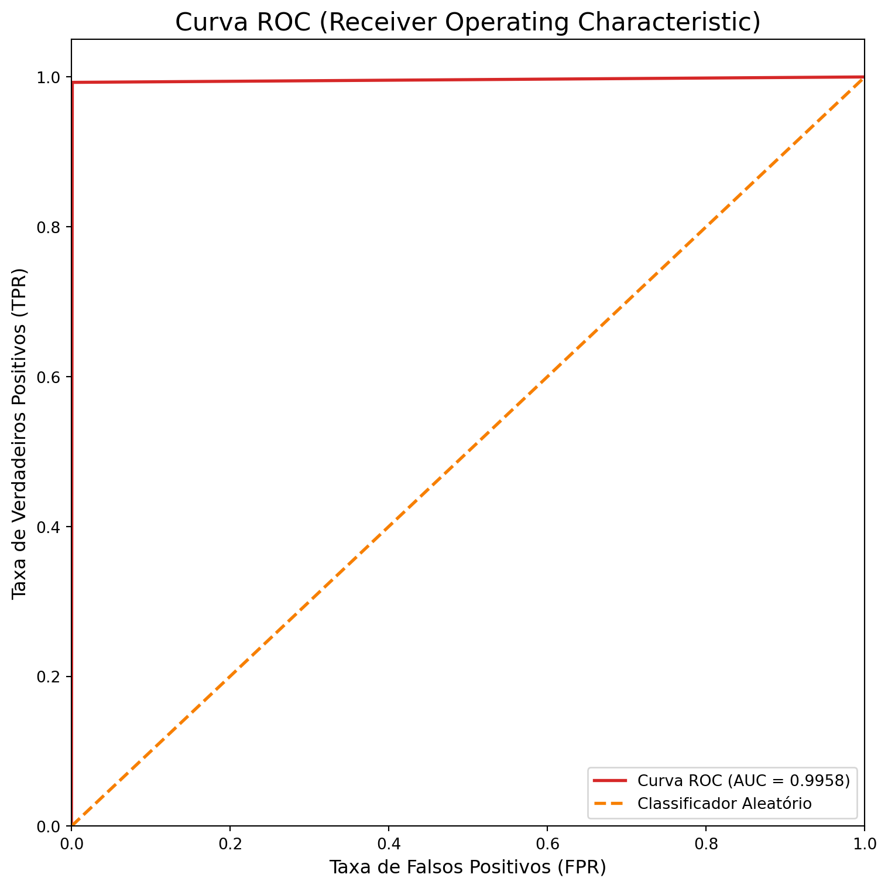
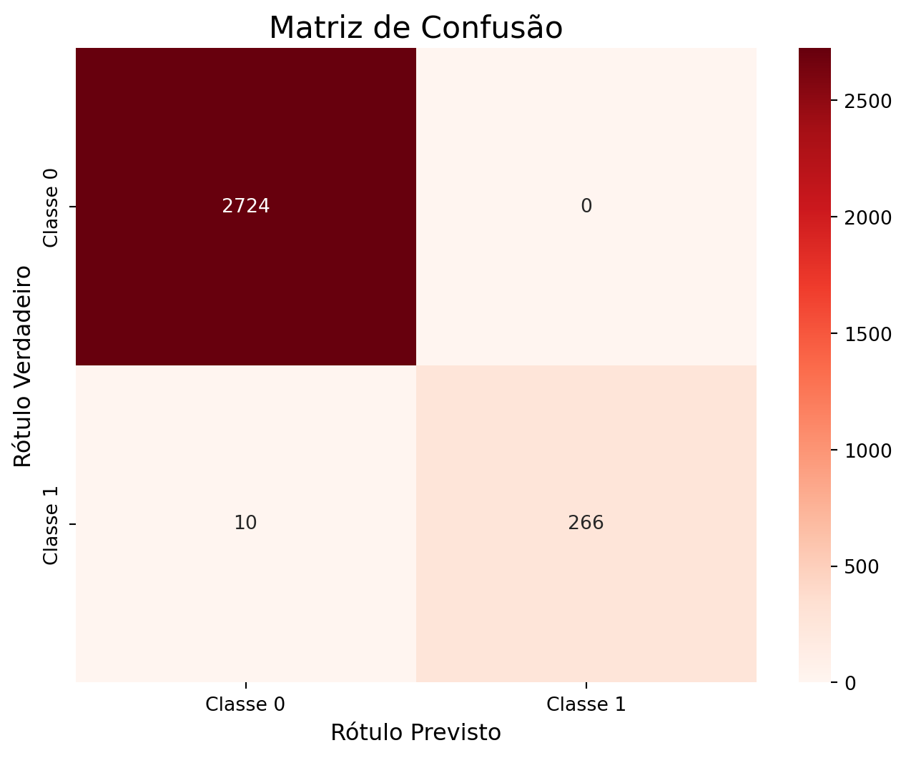
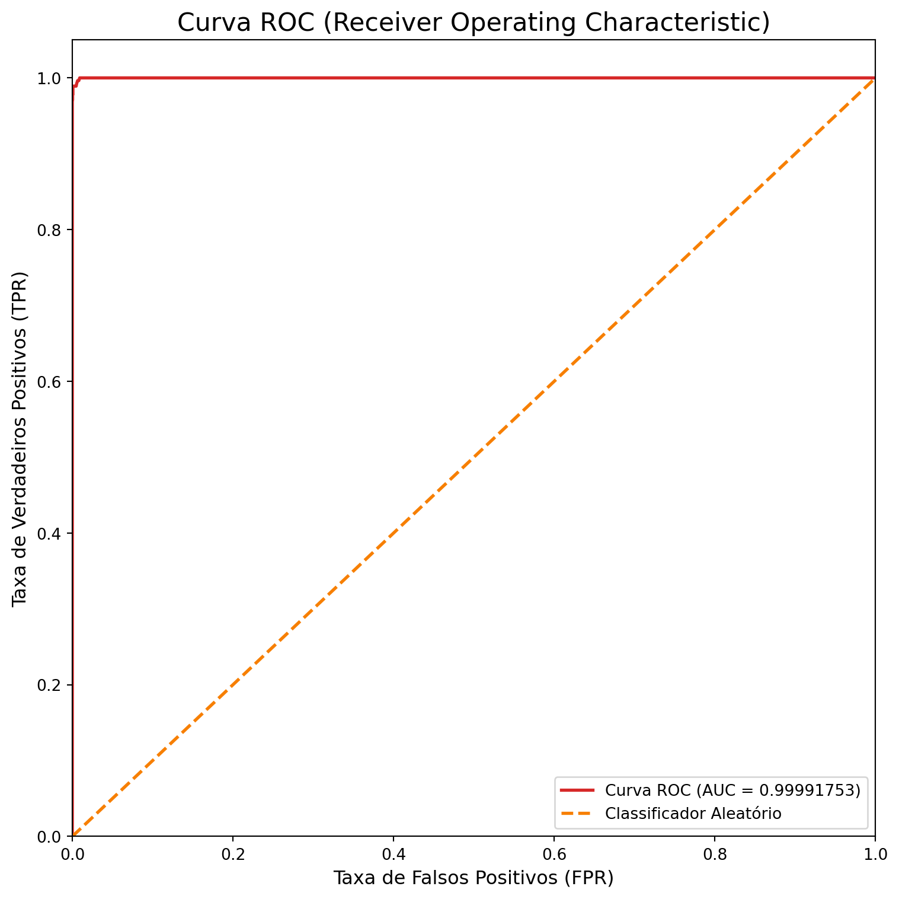

import pandas as pd
import numpy as np
import matplotlib.pyplot as plt
import seaborn as sns
from sklearn.model_selection import train_test_split
from sklearn import preprocessingTutorial 8 - Métodos de Classificação
Carregando os pacotes
Classificação
Em machine learning, um problema de classificação é a tarefa de ensinar um computador a categorizar um item em uma de várias classes ou grupos pré-definidos, com base em suas características. Imagine que você tem um conjunto de dados históricos, como e-mails já rotulados como “spam” ou “não spam”, ou peças de um motor identificadas como “aptas” ou “defeituosas”. O algoritmo aprende os padrões nesses dados para construir um modelo. O objetivo final é que esse modelo, ao receber um novo e-mail ou os dados de uma nova peça, consiga prever com alta precisão a qual classe ele pertence. Essencialmente, a classificação responde à pergunta: “A qual categoria este item pertence?”.

Os algoritmos
1. Regressão Logística

A Regressão Logística usa a função sigmoide para retornar a probabilidade de um rótulo. Ela é muito utilizada quando o problema de classificação é binário — por exemplo, verdadeiro ou falso, ganhar ou perder, positivo ou negativo.
A função sigmoide gera um valor de probabilidade e, ao compará-lo com um limiar (threshold) pré-definido, o item é classificado com o rótulo correspondente.
2. Árvore de Decisão

A Árvore de Decisão cria seus ramos de forma hierárquica, onde cada ramo pode ser entendido como uma estrutura condicional if-else.
Os ramos são desenvolvidos dividindo-se o conjunto de dados (dataset) em subconjuntos, com base nas características (features) de maior importância. A classificação final ocorre nas folhas da árvore.
3. Random Forest

Como o próprio nome sugere, o Random Forest (ou Floresta Aleatória) é um conjunto de árvores de decisão. É um tipo comum de método de ensemble, que agrega os resultados de múltiplos preditores.
O Random Forest utiliza adicionalmente a técnica de bagging, que permite que cada árvore seja treinada com uma amostragem aleatória do conjunto de dados original e, ao final, considera o voto da maioria das árvores para o resultado.
Em comparação com uma única árvore de decisão, este método tem uma melhor generalização, mas é menos interpretável, devido às múltiplas camadas de complexidade adicionadas ao modelo.
Lendo os dados
df = pd.read_csv('pydata5/card_transdata.csv')df.head(10)| distance_from_home | distance_from_last_transaction | ratio_to_median_purchase_price | repeat_retailer | used_chip | used_pin_number | online_order | fraud | |
|---|---|---|---|---|---|---|---|---|
| 0 | 2.074324 | 1.935347 | 1.499815 | 1.0 | 1.0 | 0.0 | 1.0 | 0.0 |
| 1 | 3.574707 | 0.092738 | 0.097995 | 1.0 | 1.0 | 0.0 | 1.0 | 0.0 |
| 2 | 10.390283 | 0.913754 | 3.280132 | 1.0 | 0.0 | 1.0 | 1.0 | 0.0 |
| 3 | 116.497631 | 0.168850 | 1.389876 | 1.0 | 0.0 | 0.0 | 1.0 | 1.0 |
| 4 | 9.641829 | 0.900950 | 1.216617 | 1.0 | 0.0 | 0.0 | 0.0 | 0.0 |
| 5 | 12.999810 | 0.284086 | 2.469470 | 1.0 | 1.0 | 0.0 | 0.0 | 0.0 |
| 6 | 2.681019 | 0.595123 | 0.889919 | 1.0 | 1.0 | 0.0 | 1.0 | 0.0 |
| 7 | 18.565822 | 0.460442 | 0.164495 | 1.0 | 0.0 | 0.0 | 0.0 | 0.0 |
| 8 | 154.934751 | 5.909798 | 1.911557 | 1.0 | 0.0 | 0.0 | 0.0 | 0.0 |
| 9 | 8.628521 | 10.064678 | 2.038336 | 1.0 | 0.0 | 0.0 | 1.0 | 0.0 |
df.info()<class 'pandas.DataFrame'>
RangeIndex: 10000 entries, 0 to 9999
Data columns (total 8 columns):
# Column Non-Null Count Dtype
--- ------ -------------- -----
0 distance_from_home 10000 non-null float64
1 distance_from_last_transaction 10000 non-null float64
2 ratio_to_median_purchase_price 10000 non-null float64
3 repeat_retailer 10000 non-null float64
4 used_chip 10000 non-null float64
5 used_pin_number 10000 non-null float64
6 online_order 10000 non-null float64
7 fraud 10000 non-null float64
dtypes: float64(8)
memory usage: 625.1 KBdf.describe()| distance_from_home | distance_from_last_transaction | ratio_to_median_purchase_price | repeat_retailer | used_chip | used_pin_number | online_order | fraud | |
|---|---|---|---|---|---|---|---|---|
| count | 10000.000000 | 10000.000000 | 10000.000000 | 10000.000000 | 10000.000000 | 10000.000000 | 10000.000000 | 10000.000000 |
| mean | 26.537232 | 5.170790 | 1.858588 | 0.879900 | 0.352100 | 0.101000 | 0.650900 | 0.088000 |
| std | 60.641546 | 24.453377 | 3.154173 | 0.325095 | 0.477649 | 0.301344 | 0.476709 | 0.283309 |
| min | 0.042586 | 0.001719 | 0.014394 | 0.000000 | 0.000000 | 0.000000 | 0.000000 | 0.000000 |
| 25% | 3.782188 | 0.296030 | 0.476767 | 1.000000 | 0.000000 | 0.000000 | 0.000000 | 0.000000 |
| 50% | 9.922594 | 0.983802 | 1.003697 | 1.000000 | 0.000000 | 0.000000 | 1.000000 | 0.000000 |
| 75% | 25.154153 | 3.357400 | 2.137963 | 1.000000 | 1.000000 | 0.000000 | 1.000000 | 0.000000 |
| max | 1728.517108 | 1106.303951 | 126.294930 | 1.000000 | 1.000000 | 1.000000 | 1.000000 | 1.000000 |
df.query('distance_from_home > 1000')| distance_from_home | distance_from_last_transaction | ratio_to_median_purchase_price | repeat_retailer | used_chip | used_pin_number | online_order | fraud | |
|---|---|---|---|---|---|---|---|---|
| 1864 | 1378.382006 | 1.241949 | 1.143955 | 1.0 | 1.0 | 1.0 | 1.0 | 0.0 |
| 8937 | 1728.517108 | 0.007026 | 2.676915 | 1.0 | 0.0 | 0.0 | 1.0 | 1.0 |
Análise exploratória
colors = ['#d62828', '#f77f00', '#003049']
num_list = ['distance_from_home', 'distance_from_last_transaction', 'ratio_to_median_purchase_price']
fig, axes = plt.subplots(nrows=3, ncols=1, figsize=(8, 10))
for i, column in enumerate(num_list):
df[column].plot(kind='kde', ax=axes[i], color=colors[i], lw=3)
axes[i].set_title(f'Distribuição de "{column}"', fontsize=14)
axes[i].set_xlabel('')
axes[i].set_xscale('log')
plt.tight_layout()
plt.show()
Features Categóricas e o target:
cat_list = ['repeat_retailer','used_chip','used_pin_number','online_order']
fig = plt.figure(figsize=(8,4))
for i in range(len(cat_list)):
column = cat_list[i]
sub = fig.add_subplot(2,2, i+1)
chart = sns.countplot(data=df, x=column, hue='fraud', palette = colors[0:2])
plt.tight_layout()
plt.show()
Features numéricas e o target:
fig = plt.figure(figsize = (6,12))
for i, column in enumerate(num_list):
ax = fig.add_subplot(3, 1, i + 1)
sns.boxplot(x='fraud', y=column, data=df, hue='fraud', palette=colors[0:2], ax=ax)
ax.set_yscale('log')
ax.set_title(f'Distribuição de "{column}" por Fraude (Escala Log)', fontsize=14)
plt.tight_layout()
plt.show()
Split dataset
X = df.drop(['fraud'], axis=1)
y = df["fraud"]
X_train, X_test, y_train, y_test = train_test_split(X, y, test_size=0.3, random_state=2025)Regressão Logística
from sklearn.linear_model import LogisticRegressionPara modelos com poucas observações usar solver='liblinear', já para modelos com datasets grandes, usar solver='saga'.
modelo_logreg = LogisticRegression(
solver='liblinear',
n_jobs=-1,
random_state=42,
max_iter=5000
)# Medir o tempo de treinamento
#start_time = time.time()
modelo_logreg.fit(X_train, y_train)
#end_time = time.time()
#training_time = end_time - start_time/opt/homebrew/Caskroom/miniforge/base/envs/ds_aula/lib/python3.12/site-packages/sklearn/linear_model/_logistic.py:1184: FutureWarning: 'n_jobs' has no effect since 1.8 and will be removed in 1.10. You provided 'n_jobs=-1', please leave it unspecified.
warnings.warn(msg, category=FutureWarning)LogisticRegression(max_iter=5000, n_jobs=-1, random_state=42,
solver='liblinear')In a Jupyter environment, please rerun this cell to show the HTML representation or trust the notebook. On GitHub, the HTML representation is unable to render, please try loading this page with nbviewer.org.
Parameters
Fazer Previsões com os Dados de Teste:
y_pred_logreg = modelo_logreg.predict(X_test)Avaliação do Modelo
A Acurácia é o indicador mais direto do desempenho do modelo. Ela mede o percentual de previsões corretas:
\[A=\frac{TP+TN}{TP+FP+FN+TN}\]
Agora vamos calcular alguns indicadores de acurácia.
from sklearn.metrics import accuracy_score, confusion_matrix, classification_report, roc_curve, roc_auc_score
acuracia_logreg = accuracy_score(y_test, y_pred_logreg)
print(f"\nAcurácia do modelo: {acuracia_logreg:.4f}")
Acurácia do modelo: 0.9487Outro indicador da acurácia diz respeito às vezes que o modelo acertou, para isto é necessário calcular a Matriz de Confusão.

cm_log_reg = confusion_matrix(y_test, y_pred_logreg)
plt.figure(figsize=(8, 6))
sns.heatmap(
cm_log_reg,
annot=True,
fmt='d',
cmap='Reds',
xticklabels=['Classe 0', 'Classe 1'],
yticklabels=['Classe 0', 'Classe 1']
)
plt.title('Matriz de Confusão', fontsize=16)
plt.ylabel('Rótulo Verdadeiro', fontsize=12)
plt.xlabel('Rótulo Previsto', fontsize=12)
plt.show()
O próximo indicador é o AUC (área sob a curva) que é calculada a partir da ROC (curva característica do processo). Imagine que você está avaliando um médico.

A Curva ROC é um gráfico que mostra o quão bom o médico (seu modelo) é em fazer diagnósticos. Ela mostra o equilíbrio entre duas coisas:
Acertar os doentes (Eixo Y): A taxa de “Verdadeiros Positivos”. O ideal é que seja alta.
Errar com os saudáveis (Eixo X): A taxa de “Falsos Positivos”, ou seja, quantas vezes ele diagnostica a doença em quem não a tem. O ideal é que seja baixa.
O objetivo é ter uma curva que “suba rápido” e fique o mais próximo possível do canto superior esquerdo, o que significa acertar muitos doentes sem errar muito com os saudáveis.
A AUC (Área Sob a Curva) é a nota final que o médico recebe, resumindo o gráfico inteiro em um único número.
- \(AUC = 1.0\): Um médico perfeito. Nunca erra.
- \(AUC > 0.8\): Um médico excelente, muito confiável.
- \(AUC = 0.5\): Um médico inútil. O desempenho dele é igual a jogar uma moeda para decidir.
Em resumo: A Curva ROC é o relatório de desempenho completo, e a AUC é a nota final que diz, de 0.5 a 1.0, o quão bom seu modelo é em separar as classes.
Para obter o valor de AUC, é necessário calcular as probabilidades:
y_pred_logreg_proba = modelo_logreg.predict_proba(X_test)[:, 1]auc_score_logreg = roc_auc_score(y_test, y_pred_logreg_proba)
print(f"Pontuação ROC AUC: {auc_score_logreg:.4f}")Pontuação ROC AUC: 0.9700Calcular a curva ROC:
fpr, tpr, thresholds = roc_curve(y_test, y_pred_logreg_proba)
plt.figure(figsize=(8, 4))
# Plotar a curva do nosso modelo
plt.plot(fpr, tpr, color=colors[0], lw=2, label=f'Curva ROC (AUC = {auc_score_logreg:.4f})')
# Plotar a linha de referência de um classificador aleatório (AUC = 0.5)
plt.plot([0, 1], [0, 1], color=colors[1], lw=2, linestyle='--', label='Classificador Aleatório')
plt.xlim([0.0, 1.0])
plt.ylim([0.0, 1.05])
plt.xlabel('Taxa de Falsos Positivos (FPR)', fontsize=12)
plt.ylabel('Taxa de Verdadeiros Positivos (TPR)', fontsize=12)
plt.title('Curva ROC (Receiver Operating Characteristic)', fontsize=16)
plt.legend(loc="lower right")
plt.tight_layout()
plt.show()
Árvore de Decisão
from sklearn.tree import DecisionTreeClassifier, plot_treeVamos treinar o modelo:
modelo_tree = DecisionTreeClassifier(
max_depth=6,
class_weight='balanced',
random_state=2025
)
modelo_tree.fit(X_train, y_train)DecisionTreeClassifier(class_weight='balanced', max_depth=6, random_state=2025)In a Jupyter environment, please rerun this cell to show the HTML representation or trust the notebook.
On GitHub, the HTML representation is unable to render, please try loading this page with nbviewer.org.
Parameters
Fazemos as previsões:
y_pred_tree = modelo_tree.predict(X_test)
y_pred_tree_proba = modelo_tree.predict_proba(X_test)[:, 1] #classe com fraudeAvaliação do Modelo
acuracia_tree = accuracy_score(y_test, y_pred_tree)
print(f"\nAcurácia do modelo: {acuracia_tree:.4f}")
Acurácia do modelo: 0.9983auc_score_tree = roc_auc_score(y_test, y_pred_tree_proba)
print(f"Pontuação ROC AUC: {auc_score_tree:.4f}")Pontuação ROC AUC: 0.9958E a curva ROC:
fpr, tpr, thresholds = roc_curve(y_test, y_pred_tree_proba)
plt.figure(figsize=(8, 8))
plt.plot(fpr, tpr, color=colors[0], lw=2, label=f'Curva ROC (AUC = {auc_score_tree:.4f})')
plt.plot([0, 1], [0, 1], color=colors[1], lw=2, linestyle='--', label='Classificador Aleatório')
plt.xlim([0.0, 1.0])
plt.ylim([0.0, 1.05])
plt.xlabel('Taxa de Falsos Positivos (FPR)', fontsize=12)
plt.ylabel('Taxa de Verdadeiros Positivos (TPR)', fontsize=12)
plt.title('Curva ROC (Receiver Operating Characteristic)', fontsize=16)
plt.legend(loc="lower right")
plt.tight_layout()
plt.show()
Random Forest
from sklearn.ensemble import RandomForestClassifierconstruimos o modelo:
modelo_rf = RandomForestClassifier(
n_estimators=100,
class_weight='balanced',
random_state=42,
n_jobs=-1)treinamos o modelo:
modelo_rf.fit(X_train, y_train)RandomForestClassifier(class_weight='balanced', n_jobs=-1, random_state=42)In a Jupyter environment, please rerun this cell to show the HTML representation or trust the notebook.
On GitHub, the HTML representation is unable to render, please try loading this page with nbviewer.org.
Parameters
construimos as previsões:
y_pred_rf = modelo_rf.predict(X_test)
y_pred_rf_proba = modelo_rf.predict_proba(X_test)[:, 1]Avaliação do Modelo
acuracia_rf = accuracy_score(y_test, y_pred_rf)
print(f"\nAcurácia do modelo: {acuracia_rf:.4f}")
Acurácia do modelo: 0.9967auc_score_rf = roc_auc_score(y_test, y_pred_rf_proba)
print(f"Pontuação ROC AUC: {auc_score_rf:.8f}")Pontuação ROC AUC: 0.99991753Matriz de confusão:
cm_rf = confusion_matrix(y_test, y_pred_rf)
plt.figure(figsize=(8, 6))
sns.heatmap(
cm_rf,
annot=True,
fmt='d',
cmap='Reds',
xticklabels=['Classe 0', 'Classe 1'],
yticklabels=['Classe 0', 'Classe 1']
)
plt.title('Matriz de Confusão', fontsize=16)
plt.ylabel('Rótulo Verdadeiro', fontsize=12)
plt.xlabel('Rótulo Previsto', fontsize=12)
plt.show()
E a curva ROC:
fpr, tpr, thresholds = roc_curve(y_test, y_pred_rf_proba)
plt.figure(figsize=(8, 8))
plt.plot(fpr, tpr, color=colors[0], lw=2, label=f'Curva ROC (AUC = {auc_score_rf:.8f})')
plt.plot([0, 1], [0, 1], color=colors[1], lw=2, linestyle='--', label='Classificador Aleatório')
plt.xlim([0.0, 1.0])
plt.ylim([0.0, 1.05])
plt.xlabel('Taxa de Falsos Positivos (FPR)', fontsize=12)
plt.ylabel('Taxa de Verdadeiros Positivos (TPR)', fontsize=12)
plt.title('Curva ROC (Receiver Operating Characteristic)', fontsize=16)
plt.legend(loc="lower right")
plt.tight_layout()
plt.show()
Comparando os modelos
results_data = {
'Modelo': ['Regressão Logística', 'Árvore de Decisão', 'Random Forest'],
'Acurácia': [acuracia_logreg, acuracia_tree, acuracia_rf],
'AUC': [auc_score_logreg, auc_score_tree, auc_score_rf]
}
resultados_df = pd.DataFrame(results_data)resultados_df| Modelo | Acurácia | AUC | |
|---|---|---|---|
| 0 | Regressão Logística | 0.948667 | 0.970048 |
| 1 | Árvore de Decisão | 0.998333 | 0.995826 |
| 2 | Random Forest | 0.996667 | 0.999918 |